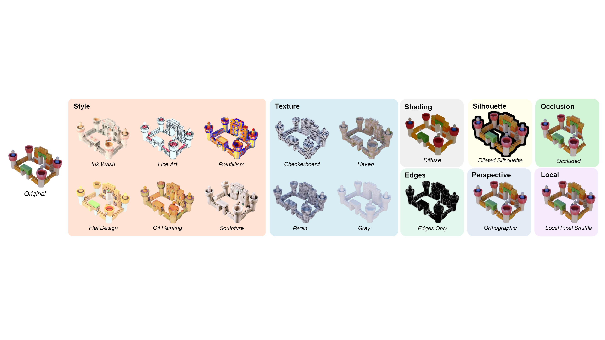

|
Zirui Wang I am a second-year master student at the University of Illinois at Urbana-Champaign, advised by Prof. James M. Rehg. Previously, I got my Bachelor's degree in Computer Science from University of Illinois at Urbana-Champaign under the supervision of Prof. Svetlana Lazebnik. My research interest lies in 3D/4D Reconstructions and 3D Generative Models. |
{kind=link}
Research |
|

|
Cue3D: Quantifying the Role of Image Cues in Single-Image 3D Generation
Xiang Li*, Zirui Wang*, Zixuan Huang, James M. Rehg NeurIPS, 2025 (Spotlight) [Paper] [Project Page] We introduce Cue3D, the first comprehensive, model-agnostic framework for quantifying the influence of individual image cues in single-image 3D generation. |
 |
HiMemFormer: Hierarchical Memory-Aware Transformer for Multi-Agent Action Anticipation
Zirui Wang, Xinran Zhao, Simon Stepputtis, Woojun Kim, Tongshuang Wu, Katia P. Sycara, Yaqi Xie NeurIPS Workshop on Video-Language Models, 2024 [Paper] We propose the Hierarchical Memory-Aware Transformer (HiMemFormer), a novel approach that simultaneously learns feature representations from both contextual and agent-specified dimensions through a dual-hierarchical framework. |
TeachingCS444: Deep Learning for Computer Vision, Spring 2025 CS440/ECE448: Artificial Intelligence, Fall 2024 ECE484: Principle of Safe Autonomy, Spring 2024 |
|
Last Update in October, 2025. Thanks for the amazing template from Jon Barron. |